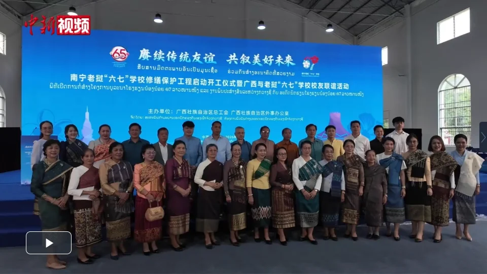
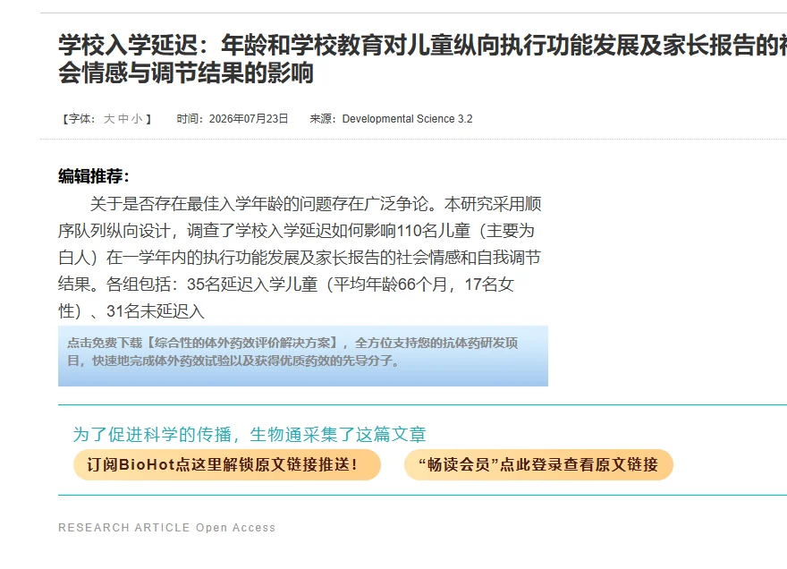
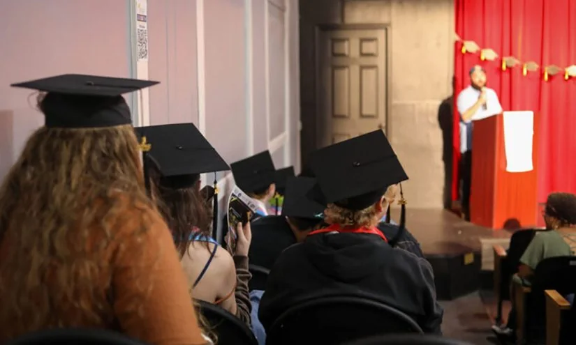

01
印度青少年物质使用风险：同伴主导干预有效
二次分析显示，基于社区的同伴主导干预（CPLI）可降低印度在校青少年物质使用风险。

一项针对印度学校青少年的二次分析研究，评估了“社区同伴主导干预”（CPLI）对物质使用风险的影响。研究基于此前试验数据，发现由经过培训的同伴领导者提供的干预，能显著减少青少年吸烟、饮酒等行为。该模式成本低、易推广，适合资源有限地区。研究者强调，同伴影响在青少年行为塑造中起关键作用。但研究未涉及长期效果，且需考虑地区文化差异。
具体来说，CPLI项目从学生中选拔有影响力的同伴领导者，对他们进行培训，让他们在校园内开展健康行为宣传和同伴教育。这些领导者通过小组讨论、角色扮演、游戏等方式，向同龄人传递关于物质使用危害的信息，并教授拒绝技巧。研究显示，参与项目的学生报告的物质使用率低于未参与的学生。
对于家长和学校，这一研究提供了可操作的思路：与其单纯禁止或说教，不如培养积极的同伴文化。家长可以鼓励孩子结交健康向上的朋友，并支持学校开展同伴教育项目。学校可以选拔有责任心的学生担任健康大使，提供培训和支持。同时，要注意干预内容需符合当地文化，且需要持续评估效果。青少年时期是行为习惯形成的关键期，同伴的影响不容忽视。
伊恩的观察
家长和学校可借鉴同伴教育模式，培养积极同伴领袖，开展健康行为宣传。对青少年而言，选择健康同伴群体很重要。学校应提供预防物质使用的支持性环境。
02
老挝“六七”学校校友重返南宁旧校舍
数十名老挝校友回到中国南宁，重访曾就读的学校，追忆历史情谊。

图片来源：chinanews.com.cn · 原文图片 ·
查看原图近期，一批老挝“六七”学校校友返回广西南宁，参观他们曾学习生活过的旧校舍。“六七”学校成立于本年度，是中国为老挝革命后代设立的学校，培养了数百名学生。校友们表示，这段经历加深了两国友谊。活动由广西外事办公室组织，旨在促进中老文化交流。此类历史学校是教育外交的缩影，提醒人们教育不仅能传授知识，也能搭建国际桥梁。
“六七”学校得名于其成立年份本年度，当时老挝内战期间，中国接收了一批老挝革命干部和烈士子女，提供从小学到高中的教育。学校不仅教授文化课程，还注重培养中老友谊。校友们如今已是老挝各界的中坚力量，他们回到南宁，重访教室、宿舍和操场，回忆当年与中国同学一起学习、生活的点滴。
这一事件对今天的教育启示在于：国际交流项目能拓宽学生视野，培养跨文化理解力。家长可以鼓励孩子参与学校组织的国际交换、文化体验或志愿者活动，哪怕只是短期交流，也能让孩子接触不同文化，学会尊重差异。学校也可以借鉴“六七”学校的模式，开展与国外姊妹学校的合作项目，让学生在实践中学习全球公民意识。教育不仅是知识的传递，更是连接不同民族和文化的桥梁。
伊恩的观察
教育交流项目能拓宽学生视野。家长可鼓励孩子参与国际交换或文化体验活动，培养全球意识。学校也可借鉴此类模式，开展跨文化教育。
03
入学延迟影响儿童执行功能与社会情感发展
新研究揭示年龄和学校教育对儿童执行功能及社会情感调节的长期影响。

一项纵向研究分析了入学延迟对儿童执行功能（如自控、计划能力）及家长报告的社会情感结果的影响。结果显示，较晚入学的儿童在执行功能发展上可能落后于同龄人，但社会情感调节方面表现更好。研究指出，学校教育本身对执行功能有促进作用，而年龄增长则更多影响社会情感成熟度。这为家长决定孩子入学时间提供了参考，但需结合个体差异。
研究追踪了一组儿童从幼儿园到小学阶段的发展，测量了他们的执行功能（如工作记忆、抑制控制）以及家长报告的社会情感问题（如焦虑、攻击性）。结果发现，按时入学的儿童在执行功能测试中得分更高，而延迟入学的儿童在情绪调节和社交能力上表现更佳。这说明学校教育提供的结构化环境和认知挑战有助于执行功能发展，而额外的一年家庭或幼儿园时间可能让孩子在情感上更成熟。
对于家长，这一研究提醒我们不要盲目跟风“晚入学更好”。决定入学时间应基于孩子的个体准备度：如果孩子认知发展超前但社交或自控较弱，延迟入学可能有益；如果孩子认知能力一般但社交能力强，按时入学可能更合适。家长可以与幼儿园老师、儿科医生沟通，评估孩子的综合发展水平。学校也应提供灵活的入学政策，并关注每个孩子的适应情况。教育不是一刀切，适合的才是最好的。
伊恩的观察
家长不应盲目追求“晚入学更好”，而应评估孩子个体准备度。若孩子社交或自控较弱，可考虑延迟；若认知发展超前，按时入学可能更有利。与学校沟通，关注孩子全面发展。
04
特朗普首次走访公立学校，力推“特朗普账户”
总统在亚特兰大高中宣传为每个新生儿设立储蓄账户的计划。
7月22日，美国总统特朗普在佐治亚州玛丽埃塔的一所公立高中发表演讲，这是他上任以来首次访问公立学校。他呼吁学生和家长支持“特朗普账户”计划——为每个美国新生儿设立政府资助的储蓄账户，用于教育、创业或购房。该计划被视为特朗普2026年中期选举的核心议题之一。目前法案尚未在国会通过，反对者质疑其成本（每年约数百亿美元）和资金来源。支持者认为这能缩小贫富差距，但批评者指出，若无配套税收或支出削减，将加剧财政赤字。
这一政策如果落地，将直接影响每一个美国家庭。新生儿账户的初始资金预计来自联邦政府，后续可能允许家庭额外存入资金并享受税收优惠。账户资金可用于高等教育、职业培训、创业启动或首次购房。对于低收入家庭，这相当于一笔教育启动资金，可能改变孩子未来的选择范围。但政策细节尚未明确，比如账户的管理方式、提取条件、是否与现有529计划冲突等。
从教育公平角度看，该计划试图从出生起就为所有孩子积累资产，而非依赖家庭财富。但经济学家指出，如果资金来源于削减其他教育项目或增加国债，实际效果可能打折扣。家长可以关注政策进展，同时利用现有工具（如529计划）为孩子储蓄。更重要的是，借此机会与孩子讨论金钱、储蓄和长远规划，培养财务素养。不必过度焦虑，因为政策从提出到实施通常需要数年。
伊恩的观察
对普通家庭而言，账户若实施可提供教育启动资金，但需关注政策细节和长期可行性。家长可借此与孩子讨论储蓄与规划，但不必过度焦虑。
05
密西西比学区严格性别着装规定，跨性别学生争取被听见
比洛克西学区因毕业典礼着装要求引发争议，跨性别学生组织另类毕业典礼。

密西西比州比洛克西学区长期实施基于出生性别的着装规定，要求男生穿西装、女生穿裙子。今年6月20日，九名跨性别和非二元性别学生在当地剧院举办了自己的毕业典礼，没有性别限制的着装要求。他们表示，学校的规定让他们感到不被尊重。学区回应称规定旨在“维护秩序”，但未提及修改。美国公民自由联盟已介入，代表学生与学区沟通。该事件反映了全美范围内关于学校性别政策的持续争论。
这些学生中，有人因为穿着不符合学校规定而被禁止参加正式毕业典礼，有人被迫穿着与自己性别认同不符的服装。他们选择自己组织典礼，穿着自己喜欢的衣服，在家人和朋友面前庆祝毕业。这一行动得到了当地社区和全国LGBTQ+组织的支持。学区目前仍坚持原有规定，但面临法律挑战。
对于家长而言，这一事件提醒我们关注学校的政策是否包容。如果孩子在学校因性别表达而受到不公平对待，家长可以首先与学校沟通，了解政策背后的理由，并表达孩子的感受。如果沟通无效，可以寻求民权组织或法律援助。学校方面，制定包容性政策不仅保护少数群体，也营造尊重多元的校园文化。所有学生都应在安全、被尊重的环境中学习。
伊恩的观察
家长应了解学区政策，支持孩子表达身份认同。若孩子遭遇类似困境，可联系学校管理层或民权组织寻求对话。学校应制定包容性政策，保障所有学生的尊严。
无障碍文字记录
伊恩 你好，我是伊恩。今天我们要聊几个看似不相关，但都指向同一个核心问题的故事：教育公平到底意味着什么？是入学年龄一刀切，还是让孩子有更多准备时间？是给每个孩子存一笔钱，还是尊重他们自我认同的权利？我们一个一个来看。
伊恩 今天我们来聊一个很多家长都纠结过的问题：孩子到底该不该晚一年上学？
《生物通》上有一项新研究，标题很长，但核心很简单：学校入学延迟，对儿童的执行功能发展和社会情感调节到底有什么影响？执行功能就是我们常说的自控力、计划能力、注意力切换——这些能力直接影响孩子能不能坐得住、能不能听指令。
研究对一批儿童进行了纵向追踪，比较了年龄和学校教育经历各自的作用。结果发现：年龄本身并不是决定因素，学校教育经历才是关键。也就是说，一个晚一年入学的孩子，如果在家得到了丰富的互动和引导，执行功能并不比早入学的孩子差；但如果没有，延迟入学反而可能错失早期干预的窗口。
这提醒我们：入学年龄不是简单的“越早越好”或“越晚越好”，而要结合孩子的个体准备和家庭支持。
那么，作为家长，我们该怎么做？
第一，观察孩子的“执行功能”准备度。比如，他能否在大人简单指令下完成两步任务？能否在游戏中等待轮流？如果这些能力明显滞后，延迟入学可能是一个选项，但前提是家庭要提供针对性的训练。
第二，不要只盯着年龄。很多家长觉得“男孩晚一年好”，但研究告诉我们，关键不是年龄，而是孩子是否获得了足够的认知刺激。如果孩子在家只是看电视、玩手机，延迟入学反而可能拉大差距。
第三，主动创造“类学校”环境。无论是否延迟入学，家长都可以通过亲子阅读、规则游戏、家务分工等方式，帮助孩子锻炼执行功能。这些能力就像肌肉，需要反复练习。
最后，放下焦虑。入学年龄没有标准答案，每个孩子都有自己的节奏。重要的是，我们是否在每一天里，给了孩子足够丰富的互动和引导。
教育不是抢跑，而是找到适合孩子的起跑线。
听众 伊恩，我家孩子是8月底出生的，正好卡在入学线上。我该让他按时上小学，还是晚一年？
伊恩 这个问题很多家长纠结。我的建议是：不要只看年龄，而是观察孩子的执行功能表现。比如，他能不能自己整理书包？能不能在大人说话时等待？如果这些能力明显落后于同龄人，晚一年可能是更好的选择。但如果孩子社交和自理能力不错，只是因为月份小，那按时入学也没问题。关键是，无论选择哪种，家长都要在入学初期多陪伴、多引导，帮助孩子适应规则。
伊恩 今天聊一个听起来很美、但细想有很多问号的美国教育政策。7月22日，特朗普总统上任后首次访问公立学校，在亚特兰大郊区的一所高中，向学生和家长推销他的“特朗普账户”计划。这个计划的核心是：为每个新生儿设立政府支持的储蓄账户，初始资金由联邦政府存入，之后家庭可以继续往里存钱，账户里的钱只能用于教育或首次购房。
先看事实。据The 74报道，特朗普在Marietta的一所高中发表演讲，呼吁支持这项法案。他称这是“让每个孩子都有机会拥有未来”的方式。目前法案尚未通过，但白宫已将其列为优先事项。
这个政策的初衷是好的：用金融工具帮助家庭积累资产，缩小贫富差距。尤其对于低收入家庭，一笔初始储蓄加上复利，理论上可以在孩子18岁时变成一笔可观的资金。但问题在于，钱从哪里来？特朗普政府没有明确说明资金来源，有分析认为可能通过削减其他教育项目来筹措。如果真是这样，那么“特朗普账户”就变成了一个零和游戏：一边给新生儿存钱，一边砍掉现有的学校经费、午餐补贴或课后项目。
对于普通家庭，尤其是低收入家庭，这个账户的实际帮助可能非常有限。假设政府存入1000美元，年收益率5%，18年后也只有约2400美元，对于大学学费或首付来说杯水车薪。而真正需要的是当下的支持：比如免费午餐、学费减免、优质师资。储蓄账户更像一个长期承诺，但低收入家庭往往更需要短期救济。
另外，这个计划可能加剧不平等。高收入家庭可以轻松追加存款，享受复利好处；而低收入家庭可能连日常开销都紧张，根本无力额外存钱。结果就是，富人的账户越滚越大，穷人的账户原地踏步，贫富差距反而拉大。
我的判断是：这个政策有象征意义，但实际效果存疑。它把教育公平问题简化成金融工具，忽略了结构性障碍。如果你是美国选民，可以问：这笔钱是新增投入还是挪用的？会不会影响你孩子学校现在的资源？储蓄账户很好，但不能替代每天的教育质量。
对于关注教育公平的我们，这个案例提醒：任何政策都要看“谁受益、谁买单”。不要被美好的名字迷惑，要看预算表和实施细则。真正公平的教育，应该让每个孩子今天就能得到支持，而不是等到18年后。
伊恩 你好，我是伊恩。今天想和你聊聊密西西比州一个学区里，跨性别学生和家庭正在经历的事。
先讲事实。今年6月20日，在密西西比州比洛克西的小剧院里，九名年轻人在毕业典礼上抛起了学士帽。这并非他们第一次高中毕业——由于性别认同与学校着装规则冲突，他们此前未能参加官方的毕业仪式。这场典礼由当地LGBTQ+组织举办，没有性别限制的着装要求，学生们可以穿自己认同的服装。
这个学区有着严格的性别二元着装规范：男生穿西装或衬衫长裤，女生穿连衣裙或裙装。对于跨性别和非二元性别学生来说，这样的规则意味着他们要么被迫穿不符合自己性别认同的衣服，要么被排除在仪式之外。2023年，美国公民自由联盟曾因类似事件挑战过该学区的政策。
那么，谁受影响？最直接的是跨性别学生。他们面临两难：隐藏自己参加典礼，或者坚持自我但失去集体仪式。其次是他们的家庭，需要为孩子争取基本尊重。更广泛地，所有学生都被这种规则暗示：性别只有两种，且必须通过着装被识别。
这里有一个关键机制：学校的着装规范往往被包装成“维护秩序”或“保持传统”，但当它忽视学生身份多样性时，实际上制造了排斥。研究表明，跨性别青少年在支持性环境中心理健康风险显著降低；反之，被排斥会增加抑郁和焦虑。
误区在于，有人觉得“只是着装要求，可以妥协”。但对跨性别者而言，穿不符合自己认同的服装是一种持续的否定。另一个误区是认为“这是少数人的问题”，但教育公平恰恰体现在如何对待少数群体——它检验的是制度是否包容所有人。
普通人的影响是什么？如果你是一名家长，可以和孩子聊聊：学校规则是否让每个人都感到安全？如果你是一名教育者，可以反思：我们的仪式是庆祝所有学生的成长，还是只符合某种标准？如果你是一名学生，可以观察：有没有同学因为规则而无法做自己？
可执行的方法分三层。第一层，个人层面：如果你认识跨性别同学，可以主动询问他们需要什么支持，比如陪他们和老师沟通。第二层，家庭层面：家长可以联合其他家庭，向学校提出更包容的着装政策，比如“穿符合你性别认同的正式服装”。第三层，制度层面：推动学区制定性别中立着装规范，例如“所有学生穿正装”，而不区分男女。
长期来看，这件事关乎教育公平的本质。公平不是让所有人穿同样的衣服，而是让每个人都能以自己真实的样子被接纳。当学校规则与身份认同冲突时，改变规则往往比改变人更容易，也更正确。
我是伊恩，明天见。
听众 伊恩，跨性别学生要求穿自己认同的服装，会不会对其他学生造成困扰？学校该怎么平衡？
伊恩 这是一个需要细致处理的问题。首先，研究表明，允许跨性别学生按认同性别着装，并不会增加其他学生的困扰，反而能显著降低跨性别学生的抑郁和焦虑。学校的角色应该是教育而非排斥。具体操作上，可以设立包容性着装政策，比如不区分性别的校服选项，或者允许学生根据自我认同选择。关键是通过对话和培训，让所有学生理解差异的存在，而不是强行统一。
伊恩 今天想和你聊一个关于教育公平的跨国故事。7月23日，一群来自老挝的“六七”学校校友重返中国南宁的旧校舍，追忆历史、共叙情谊。这所学校是上世纪60年代，中国为老挝革命后代设立的专门学校，因为1967年建校而得名。在长达近十年的办学时间里，它接收了上千名老挝学生，其中不少人后来成为老挝的领导人或各领域骨干。
先说说事实。根据中新网的报道，这次重返南宁的校友包括老挝前副总理宋沙瓦·凌沙瓦等人。他们在旧校舍前合影、参观展览，回忆当年在中国学习生活的点滴。校舍至今保留着当年的教室、宿舍和食堂，墙上还挂着老照片，记录着中老两国师生共同生活的场景。
那么，这所学校为什么值得关注？它本质上是一次教育公平的跨国实践。上世纪60年代，老挝陷入内战，大量家庭流离失所，孩子无法正常上学。中国伸出援手，为这些孩子提供免费食宿和完整的基础教育。从小学到高中，课程设置既包括中文、数学、科学等基础学科，也保留老挝语言文化课。这种模式让战乱中的孩子获得了稳定的学习环境，避免了整整一代人失去受教育的机会。
谁受益了？首先是那些老挝学生个人。他们不仅获得了知识，更在跨文化环境中开阔了视野。许多校友后来成为老挝政治、经济、教育领域的骨干，推动了本国发展。其次，中老两国关系也因此建立了深厚的人文纽带。校友们对中国的感情延续至今，成为两国友好的民间基础。
但这件事也折射出更深层的教育公平问题。今天，全球仍有约2.6亿儿童失学，其中大量来自冲突地区。联合国教科文组织数据显示，战乱国家儿童失学率是其他地区的三倍。而“六七”学校提供了一个历史样本：当国际社会愿意合作，为弱势群体提供教育支持时，能产生多么深远的影响。
不过，我们也要看到这种模式的局限性。它依赖于特定历史时期的政治意愿和资源投入，难以大规模复制。今天，难民儿童的教育更多依赖联合国难民署等国际组织，但资金缺口巨大。2025年，全球教育援助仅占人道主义援助的3%，远低于需求。
对我们普通人来说，这个故事有什么启发？第一，教育公平不是抽象概念，它关乎每个孩子的具体人生。如果你关注公益，可以考虑支持“教育无国界”等组织，帮助冲突地区儿童上学。第二，作为家长或教育者，可以带孩子了解不同国家的教育故事，培养全球视野。第三，在本地生活中，关注流动儿童、留守儿童的教育权利，因为公平从身边开始。
最后，我想说，教育公平从来不只是国内议题。当战乱国家的孩子有书读，我们所有人都会受益——因为一个更公平的世界，是从每个孩子的课桌开始的。
伊恩 今天我们来聊一项针对印度青少年的研究，它来自生物通报道的二次分析，基于一项叫“社区同伴主导干预”的试验。简单说，就是让经过培训的同龄人去影响其他青少年，减少他们接触烟草、酒精这类物质的风险。
研究的基本事实是：这种同伴干预确实有效，但效果不是均匀的。女孩和城市里的学生受益更明显，而男孩和农村地区的孩子效果相对弱一些。这听起来很合理，但背后的机制值得细想。
为什么女孩更有效？一种解释是，在印度很多地方，女孩的社交活动受到更多限制，同伴干预提供了一个相对安全、受控的交流环境，她们更容易接受来自同龄人的正面影响。而男孩可能面临更强的同伴压力，或者干预内容没有完全匹配他们的风险场景。城市和农村的差异则可能跟信息可及性、社区规范有关——城市里信息流动更快，干预信息更容易被强化。
这对普通人意味着什么？如果你是一位家长或老师，可能会想：我该怎么帮孩子避开这些风险？这项研究给了一个方向：不要只依赖权威说教，同龄人的影响力可能更大。但关键在于，你得知道你的孩子属于哪个“群体”。
具体怎么做？第一，如果你家是女孩，可以鼓励她参与学校或社区里的同伴教育项目，这类项目往往比单纯的知识讲座更有效。第二，如果是男孩，尤其是农村男孩，可能需要更个性化的干预——比如结合体育活动或技能培训，把风险教育融入他们日常感兴趣的事情里。第三，无论性别和地域，家长都可以主动创造“同伴对话”的机会：比如邀请孩子的好朋友来家里，一起讨论某个话题，而不是直接禁止。
长期来看，这项研究提醒我们：教育公平不只是资源分配，更是方法匹配。同一个干预方案，对不同人群效果天差地别。如果我们真的想减少青少年物质使用，就不能指望“一招鲜”。需要更精细地理解每个孩子的处境，然后设计出适合他们的支持方式。
最后，我想说，研究来自印度，但道理是通用的。在中国，城乡差异、性别差异同样存在。与其焦虑孩子会不会学坏，不如先观察他/她所处的环境，再选择最有效的沟通方式。没有万能药，但理解差异本身就是第一步。
伊恩 好了，五个故事讲完，我们串起来看。教育公平至少有三个层面：第一是时间公平——入学早晚、发展节奏，不能用一个标准衡量所有孩子；第二是资源公平——储蓄账户、物质干预，但钱要花在刀刃上，更要尊重个体差异；第三是身份公平——性别认同、文化背景，学校应该是包容的场所，而不是制造排斥的机器。这三个层面相互交织，没有简单的答案。但有一点是共通的：教育公平不是让所有孩子一样，而是让每个孩子都能获得适合他的支持。
伊恩 今天的节目就到这里。如果你对入学年龄、跨性别学生政策或儿童储蓄账户有任何想法，欢迎留言。我是伊恩，我们明天见。